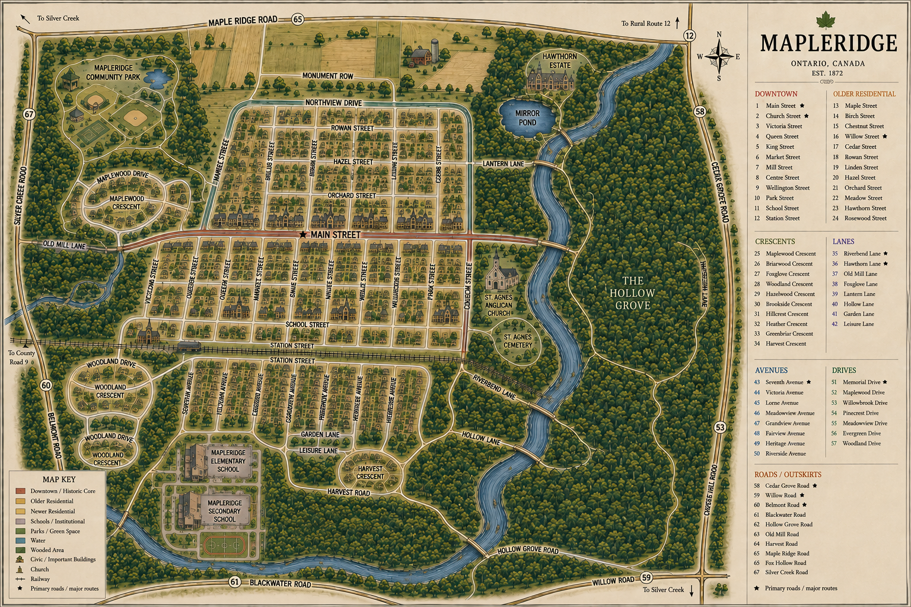

Click a location to explore Mapleridge.
MAPLERIDGE
Explore the town
Click one of the numbered locations or character homes on the map to begin exploring Mapleridge.
23 locations
4 character homes
Interactive map